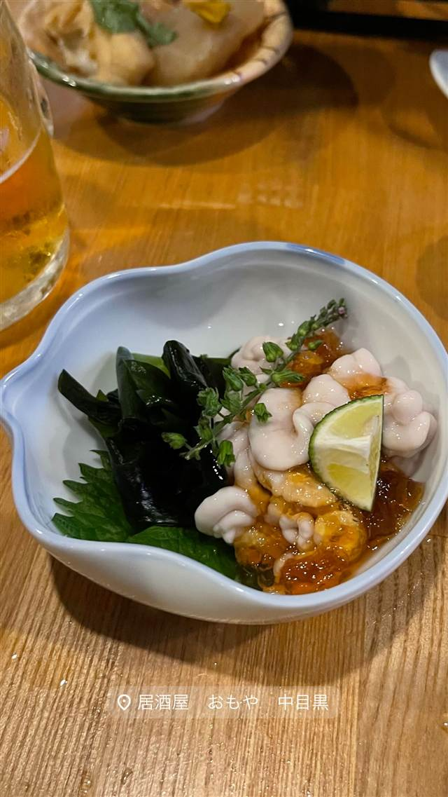

おもや（めしさけ おもや）
実家食堂の屋号を継いだ店名、大鍋でじっくり煮込むもつ煮
居酒屋 おもや 中目黒
店主の実家が南新宿で営んでいた食堂の屋号「おもや」を受け継いだ、中目黒の居酒屋。市場直送のアジフライや大鍋でじっくり煮込むもつ煮など、丁寧な仕込みの肴と酒が楽しめる。
TRIVIA
豆知識
- 店名「おもや」は店主の実家が南新宿で営んでいた食堂の屋号に由来する
- 中目黒で複数展開する店主グループの4店舗目にあたる
REVIEWS
世間の評判
3.36食べログ
鰯のアテ巻きとアジフライの評判
- 名物の鰯のアテ巻きやアジフライをとても美味しいと評価する声が多い
- 新鮮な刺身盛り合わせや焼かない冷製レバニラなど創作料理を評価する声が多い
- アテ巻きは1品900円ほどとやや高めで席数も少ないという声がある
食べログ 口コミ137件
| 系譜 | 店主の実家が南新宿で長く営んでいた食堂の屋号「おもや」を受け継いで命名 |
|---|---|
| 看板 | 白子ポン酢、市場直送のアジフライ、大鍋でじっくり煮込むもつ煮 |
| こだわり | 市場から直接仕入れる新鮮なアジ、もつ煮は毎日大鍋でじっくり煮込んで仕込む |
| どこから | 都心 |
| 営業時間 | 月〜日 17:00-00:00 |
| 予算 | 夜 ¥5,000～¥5,999 |
| 場所 | 中目黒駅 東京都目黒区東山1-7-9 柳澤ビル1F |
| メモ | 中目黒駅から徒歩約5分、営業17:00〜25:00、日曜定休、予算目安5000円程度 |
食べたもの：白子ポン酢
NEARBY
近い店・同じ系統の店
-
 ★
焼肉 中目黒駅
びーふてい 中目黒店
1988年創業、和牛一頭買いで味わう名物ガツン焼き
夜 ¥6,000～¥7,999
★
焼肉 中目黒駅
びーふてい 中目黒店
1988年創業、和牛一頭買いで味わう名物ガツン焼き
夜 ¥6,000～¥7,999
-
 ★
焼肉 中目黒
小野田商店
中目黒の路地裏、七輪で焼く500円前後のホルモン
夜 ¥3,000～¥3,999
★
焼肉 中目黒
小野田商店
中目黒の路地裏、七輪で焼く500円前後のホルモン
夜 ¥3,000～¥3,999
-
 ピザ 中目黒駅
聖林館（セイリンカン）
マルゲリータとマリナーラの2種のみ、国産小麦を長期熟成
昼 ¥4,000～¥4,999 夜 ¥4,000～¥4,999
ピザ 中目黒駅
聖林館（セイリンカン）
マルゲリータとマリナーラの2種のみ、国産小麦を長期熟成
昼 ¥4,000～¥4,999 夜 ¥4,000～¥4,999
-
 ピザ 中目黒駅
ピッツエリア エ トラットリア ダ・イーサ（Pizzeria e trattoria da ISA）
世界ピッツァ選手権優勝のナポリピッツァ職人が焼くマルゲリータ
昼 ¥2,000～¥2,999 夜 ¥3,000～¥3,999
ピザ 中目黒駅
ピッツエリア エ トラットリア ダ・イーサ（Pizzeria e trattoria da ISA）
世界ピッツァ選手権優勝のナポリピッツァ職人が焼くマルゲリータ
昼 ¥2,000～¥2,999 夜 ¥3,000～¥3,999
-
 イタリアン 中目黒駅
関谷スパゲティ
真空圧縮で気泡を抜いた自家製極太麺のナポリタンが730円均一
昼 ～¥999 夜 ～¥999
イタリアン 中目黒駅
関谷スパゲティ
真空圧縮で気泡を抜いた自家製極太麺のナポリタンが730円均一
昼 ～¥999 夜 ～¥999
-
 パスタ 中目黒駅
中目黒 ピッツェリア8
350℃の石窯で焼く本格ナポリピッツァと自家製生パスタ
昼 ¥1,000～¥1,999 夜 ¥3,000～¥3,999
パスタ 中目黒駅
中目黒 ピッツェリア8
350℃の石窯で焼く本格ナポリピッツァと自家製生パスタ
昼 ¥1,000～¥1,999 夜 ¥3,000～¥3,999
ONSEN & SAUNA